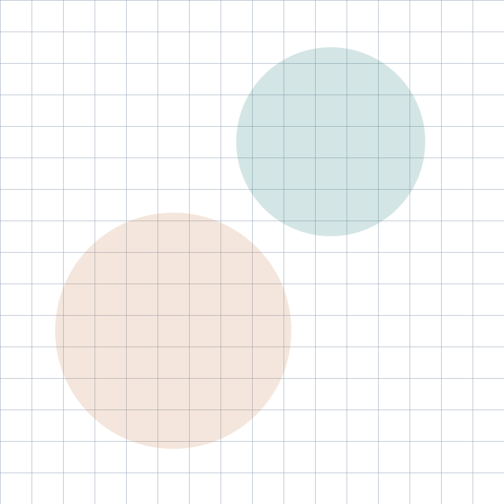
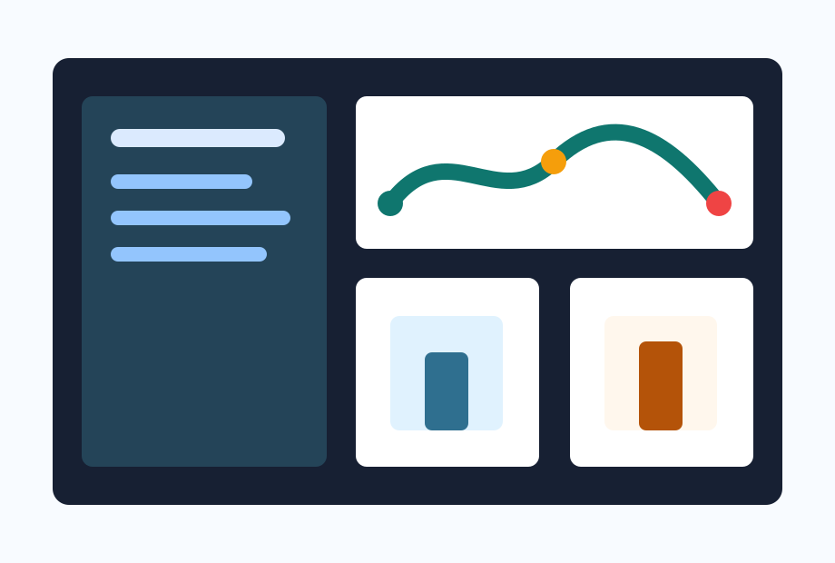

Ranni slides spike
{{TITLE}}
{{PROMPT}}
HTML source -> prepared DOM -> limited editable PPTX
目录
- 01规范固定画布与导出标注
- 02预处理Playwright 测量与截图回退
- 03转换dom-to-pptx 生成有限可编辑 PPTX
- 04验证HTML / PPTX 预览与 QA 报告
目标是先收敛可用子集，再决定产品化投入。
受限 HTML 的写作边界
页面约束
每页使用独立 .slide，画布固定为 1280 x 720，页内 overflow hidden，避免转换时出现滚动状态。
元素意图
重要标题和正文标记 data-pptx-editable，复杂视觉块标记 data-pptx-raster 并提供 data-pptx-alt。
优先保留关键文本可编辑性，复杂视觉使用局部截图稳定输出。
双栏图文页
面向 agent 的生成方式
- 用 CSS 控制版式和视觉层级。
- 所有本地资源放进 assets/。
- 导出前将复杂局部替换为图片。

数据与表格页
Slides8覆盖典型版式
Editable文本保留为对象
Raster局部按节点回退
| 检查项 | 方法 | 输出 |
|---|---|---|
| 尺寸 | DOM 测量 | measurements.json |
| 回退 | 元素截图 | fallback-assets/ |
| 预览 | HTML / PPTX 渲染 | preview-*/ |
复杂图表截图回退页
图表主体使用 canvas、渐变和叠加标签，导出前按 data-pptx-raster 局部截图。
Q1 需求爬坡
Q3 质量门稳定
HTML 预览与 PPTX 输出差异
保留策略
标题、说明和结论仍保持可编辑。
标题、说明和结论仍保持可编辑。
产品化时间线
P0Spike验证工具链和样例 deck
P1Skill route暴露稳定工具与报告字段
P2Quality gates增加 diff、字体和编辑性检查
P3Mapper为稳定子集自研映射器
结论
可编辑优先正文和核心结论保留为 PPTX 文本对象。
视觉稳定复杂节点在转换前进入 fallback-assets/。
证据留存measurements.json 与 qa-report.json 记录真实表现。
下一步：扩大样例覆盖，并补充图像 diff 与字体检查。